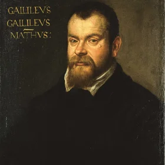

Gallery 1
The Intuition
Intuition
∞
What is infinity?
Most people think of natural numbers: 1, 2, 3, 4, 5 ...
You can never finish writing them. That's our intuition of infinity:
A sequence that never ends.
How far can you count?
In 1638, someone noticed something strange...
Gallery 2
The Paradox
Paradox
In 1638, Galileo compared two sequences of numbers.伽利略比较了两串数字。
The first: natural numbers — starting from 1, adding 1 each time:
Natural numbers
Perfect squares
The second: perfect squares — the square of some natural number:
1²=1, 2²=4, 3²=9, 4²=16, 5²=25, …
Count them yourself: how many squares?
Here are the first 50 natural numbers.
Which ones do you think are perfect squares? Tap to try.
你觉得哪些是完全平方数？点出来试试。
Gallery 3
The Question
Question
Two and a half centuries later, Georg Cantor asked a question no one had asked:格奥尔格·康托尔问了一个人没问过的问题：
Are all infinities the same size?
He asked something specific first: can the decimals between 0 and 1 be arranged in a list?
Try writing a few decimals between 0 and 1 (at least 8 recommended).
试着写几个 0 到 1 之间的小数（建议至少 8 个）。
Your list is empty. Start writing.
Gallery 4
The Diagonal
Diagonal
Cantor said: "Let me see the diagonal of this table.""让我看看这张表的对角线。"
Click the button to see how Cantor finds the diagonal.
Gallery 5
The Consequence
Consequence
This new number isn't in the table.
But the table claims to contain all decimals.
Contradiction.
So — the table was never complete.
No matter how you arrange them, the diagonal +1 always produces a number not in the table.
Arranging into a table means each decimal gets a number —
1st, 2nd, 3rd...
But it's been proven: decimals can't be arranged into a table.
Some decimals will always be left without a number.
Remember Galileo?
Pairable means equally many.
Unpairable means more.
Natural numbers
1, 2, 3, 4, 5, …
Every number has a position:
Row 1, Row 2, Row 3...
第 1 行、第 2 行、第 3 行……
Infinite
Decimals between 0 and 1
0.3, 0.14, 0.827, …
Some always miss out:
the diagonal always escapes
对角线总能造出漏网的
Infinite, but bigger
The decimals between 0 and 1
are more than all natural numbers.
Not just a few more.
Too many to fit in any table.
∞
Infinity has sizes.
Some infinities are bigger than others.
Gallery 6
The Epitaph
Epitaph

1638
Galileo glimpsed the shadow of infinity, and turned away.
1891
Cantor walked in.
The diagonal argument confirmed that infinity wasn't one kind.
Some infinities are bigger than others.